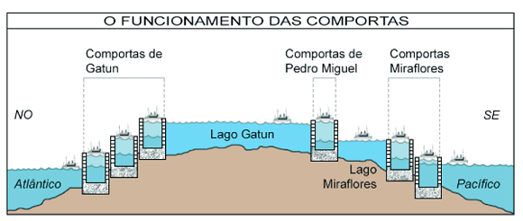
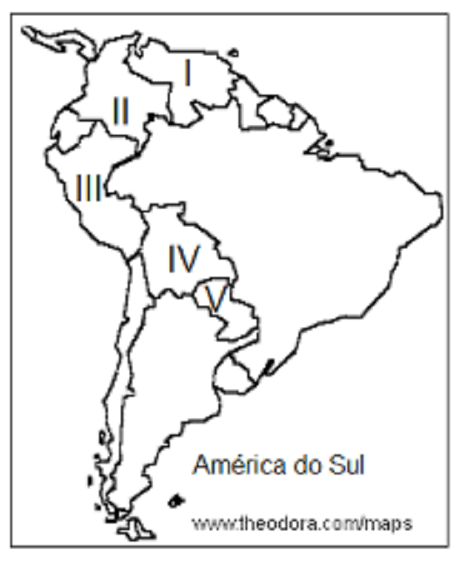
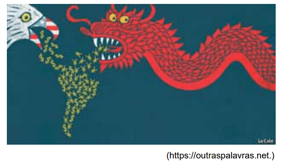

Conteúdo:
Questão 01
(UECE 2018) Escreva V ou F, conforme seja verdadeiro ou falso o que se diz a seguir sobre a geografia humana dos Estados Unidos.
( ) Apesar de o país ser uma potência mundial, sua supremacia, que segue absoluta no campo militar, revela certa debilidade em âmbito político e econômico.
( ) A composição étnica da população dos Estados Unidos experimenta grandes mudanças, como pode ser observado na Califórnia, que atualmente tem mais habitantes de origem hispânica do que brancos não latinos.
( ) Após os atentados de 11 de setembro de 2001, os valores de liberdade da sociedade estadunidense se fortaleceram, fazendo com que as agências de segurança reduzissem suas ações de espionagem e de violação da privacidade do cidadão.
( ) Após a crise financeira de 2008, mudou-se consideravelmente a política econômica dos Estados Unidos, com fortes restrições aos que causaram as instabilidades no mercado de hipotecas.
Está correta, de cima para baixo, a seguinte sequência:
a) F, V, V, V.
b) V, V, F, F.
c) V, F, F, F.
d) F, F, V, V.
Questão 02
(UEA 2018)
“Ao longo de um século e meio, os Estados Unidos se transformaram na maior potência agrícola da história. No entanto, o clima favorável e o solo fértil explicam só parte da impressionante expansão. De acordo com a Organização das Nações Unidas para Alimentação e Agricultura (FAO), são produzidas no país, em média, 9 toneladas de grãos por hectare, mais que o dobro da taxa brasileira. Desde a década de 1990, a área plantada praticamente não aumenta, mas a safra cresceu 2% ao ano, em média.”
(https://exame.abril.com.br. Adaptado.)
Uma das características da produção agrícola dos Estados Unidos é
a) a firme recusa à produção de alimentos transgênicos, o que garante alta aceitação do mercado.
b) o desinteresse no emprego da biotecnologia, o que mantém prestigiados os saberes tradicionais.
c) a fraca atuação na produção e distribuição de insumos agrícolas pelo mundo, o que valoriza soluções locais.
d) a discreta intervenção do Estado por meio de subsídios e práticas protecionistas, o que assegura o livre-comércio.
e) o elevado grau de mecanização nas várias etapas do processo de cultivo, o que garante alta produtividade.
Questão 03
(UEA 2019) A ocupação militar dos Estados Unidos no Afeganistão, atualmente reavaliada pelo governo estadunidense, remete à
a) Guerra ao Terror, em resposta aos ataques terroristas de 11 de setembro de 2001 nos Estados Unidos.
b) Guerra do Golfo, intervenção preventiva à escalada de grupos políticos antidemocráticos no início do século XXI.
c) Guerra ao Terror, resultado do rompimento das relações bilaterais em 3 de janeiro de 1961 pelo Afeganistão.
d) Guerra do Golfo, motivada pelos antigos limites impostos pelo governo afegão à exportação de petróleo aos Estados Unidos.
e) Guerra ao Terror, atrelada aos processos de remarcação de fronteiras no Oriente Médio.
Questão 04
(MACKENZIE) É incorreto afirmar sobre a economia do Canadá que:
a) a extração de madeira, especialmente voltada para a produção de papel e celulose, é importante indústria canadense;
b) nos platôs interiores das cadeias montanhosas da Colúmbia Britânica, desenvolve-se uma pecuária extensiva para a produção de carne;
c) a região das Províncias Marítimas caracteriza-se pelas atividades policultoras e pela pesca;
d) a maior concentração demográfica situada na região ocidental do país é responsável pelo desenvolvimento da agropecuária regional;
e) a utilização de técnicas modernas e altamente produtivas faz do Canadá um grande produtor de cereais.
Questão 05
(UEA 2015)
“Em 1o de janeiro de 1994, o Exército Zapatista de Libertação Nacional (EZLN) tomou o controle de parte da pobre província de Chiapas. Formado em sua maior parte por indígenas, o EZLN ocupou cidades, libertou presos e desafiou o poder do Estado na região. Depois de longas disputas com o governo nacional, o grupo abaixou as armas e adotou estratégias de resistência civil. Hoje, controla parte de Chiapas.”
(www.cartacapital.com.br. Adaptado.)
O país que abriga o movimento guerrilheiro descrito pelo excerto e uma das pautas deste movimento são, respectivamente,
a) África do Sul e o regime de segregação racial implantado para privilegiar a minoria branca.
b) Colômbia e a dificuldade dos pequenos agricultores em competir com as fazendas comerciais.
c) Índia e a luta pela extinção do sistema de castas permitindo a mobilidade social.
d) México e a condição de vida precária da população camponesa e indígena.
e) Cuba e a tentativa de derrubar o governo ditatorial apoiado pelos Estados Unidos.
Questão 06
(IFSP 2011)
TEXTO PARA A PRÓXIMA QUESTÃO:
“Em janeiro de 2005, Juana Tapia perdeu suas duas filhas para uma enchente repentina que atingiu Tijuana, uma cidade mexicana localizada na fronteira com os EUA. Os Tapia são catadores de papel na cidade. Tempestades de inverno são temidas em Tijuana porque grande parte dos habitantes mora em casas precárias erguidas nas encostas de morros erodidos.
A cidade sustenta-se como plataforma manufatureira das gigantes maquiladoras, que estão localizadas em parques industriais modernos e bem planejados, indistinguíveis de seus equivalentes ao norte da fronteira, com amplas ruas pavimentadas e um bom sistema de drenagem pluvial. Os bairros operários de Tijuana, por outro lado, terão de esperar décadas por uma urbanização decente. Embora paguem impostos municipais irrisórios, as maquiladoras consomem a maior parte do orçamento da cidade. Em outras palavras, a classe trabalhadora de Tijuana subsidia as opulentas empresas no México.
A verdadeira história do 'desastre global' tem pouco a ver com falhas geológicas ou tempestades cataclísmicas.
Ele se refere as condições sociais em que os pobres hoje residem. Há cerca de 1 bilhão de favelados no mundo, um número que duplicara até 2020. E a crise habitacional global, não as placas tectônicas ou o El Niño, que determina a sentença de morte dos miseráveis.
(DAVIS, Mike. Apologia dos bárbaros. São Paulo: Boitempo, 2008, pp. 209-11. Adaptado)
Assinale a alternativa que sintetiza de forma valida e adequada as opiniões do texto de Mike Davis.
a) Os pobres são os principais responsáveis pela situação de vida precária em que residem, na medida em que habitam encostas de morros erodidos.
b) A exploração social dos trabalhadores e não os fenômenos naturais explicam as péssimas condições de vida da gigantesca população favelada no México e no mundo.
c) As empresas maquiladoras produzem e consomem a maior parte da riqueza de Tijuana, promovendo lentamente o desenvolvimento urbanístico e social da cidade como um todo.
d) As condições climáticas e geológicas degradadas promovidas pela enorme produção industrial global são o grande problema a ser enfrentado no século XXI.
e) Combater os subsídios feitos pelas empresas e pela classe trabalhadora aos governos pode ajudar a combater os problemas ambientais globais.
Questão 07
(UFSM) Observe a figura a seguir que representa o esquema de travessia de um canal artificial de grande importância econômica e estratégica.

(COELHO, M. A. e TERRA, L. Geografia geral: o espaço natural e socioeconômico. São Paulo: Moderna, 2001.p. 163.)
A análise da figura permite concluir que se trata do Canal:
a) de Suez.
b) de Beagle.
c) do Panamá.
d) de S. George.
e) da Mancha.
Questão 08
(BRASIL ESCOLA 2021) A América Platina é uma subdivisão da América do Sul. Essa região é composta por três países que são banhados pelos rios que integram a Bacia Hidrográfica do Rio Prata. Essas três nações que formam a América Platina são:
a) Peru, Chile e Bolívia.
b) Argentina, Paraguai e Uruguai.
c) Argentina, Brasil e Paraguai.
d) Colômbia, Equador e Venezuela.
e) Peru, Brasil e Paraguai.
Comentário:
a) Falso – Esses três países citados no item não integram a América Platina, pois não estão inseridos na Bacia Hidrográfica do Rio Prata.
b) Verdadeiro – As três nações que formam a América Platina são Argentina, Paraguai e Uruguai. Esses três países são banhados pelos principais rios que integram a Bacia Hidrográfica do Rio Prata (Paraná, Paraguai e Uruguai).
c) Falso – Argentina e Paraguai são países platinos, porém, o Brasil não está inserido nessa subdivisão da América do Sul.
d) Falso – Colômbia, Equador e Venezuela estão localizados na porção norte da América do Sul, ou seja, no outro extremo da Bacia Hidrográfica do Rio Prata.
e) Falso – Paraguai é um país platino, no entanto, Brasil e Peru não fazem parte da América Platina.
Questão 09
(UNIFENAS 2018) Observe o mapa abaixo.

O país vive atualmente uma situação complicada. O preço do barril do petróleo, base de sua economia, baixou. As medidas de controle estatal próprias e o modelo de socialismo inspirado no bolivarianismo se mostraram insustentáveis dentro de um contexto de crise política e econômica. [..]. A situação caótica provocou uma forte onda migratória para os países vizinhos da América Latina, principalmente o Brasil.
Fonte: Jornal O Povo. 05/03/2018. Adaptado.
Os dados mencionados no fragmento retratam um cenário de crise econômica e política em um país sul-americano destacado no mapa pelo algarismo:
a) I.
b) II.
c) III.
d) IV.
e) V.
Questão 10
(UEA 2020) A charge faz referência à atuação de dois países que promovem ações para o reordenamento dos territórios, segundo os seus interesses.

Considerando a charge, pode-se afirmar que ocorre na América Latina uma disputa
a) comercial, com a finalidade de estreitar laços de cooperação e aprofundar a dependência econômica externa.
b) política, com a intenção de alinhar apoios diplomáticos e posicionar estrategicamente nos acordos internacionais.
c) geopolítica, com o objetivo de alinhar os princípios do capitalismo ocidental com os do socialismo oriental.
d) ambiental, com o objetivo de contribuir para a conservação dos recursos naturais e assegurar o mercado da água.
e) ideológica, com o propósito de intensificar campanhas publicitárias e legitimar a era do globalismo cultural.